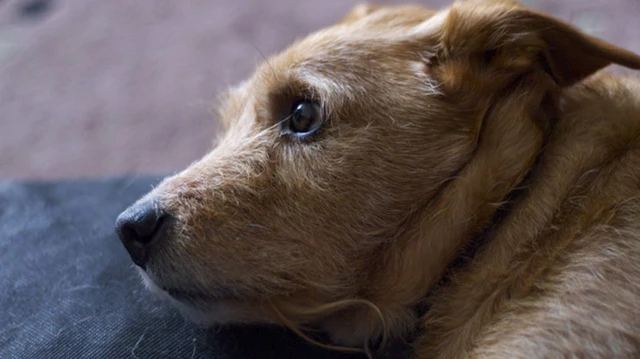

How to Calm Your Dog in Stressful Situations


As a veterinarian, we've seen firsthand the impact that stress and anxiety can have on our canine companions. Whether it's a thunderstorm, fireworks, or separation anxiety, there are many situations that can cause our dogs to feel anxious and scared. At our veterinary clinic, we've worked with numerous pet owners to help them find ways to calm their dogs in stressful situations, and we're excited to share our expertise with you. In this article, we'll explore the best ways to calm your dog during stressful situations, from natural calmers to training techniques.
Table of Contents
Understanding Canine Anxiety
Before we dive into the ways to calm your dog, it's essential to understand what causes canine anxiety. Dogs can become anxious due to various factors, including loud noises, changes in their environment, or separation from their owners. We've seen dogs that are afraid of thunderstorms, fireworks, or even vet visits. By recognizing the signs of anxiety in your dog, you can take steps to help them feel more comfortable and secure.
Calming Signals and Techniques
Also Read
Check out more pet care guides hereOne of the most effective ways to calm your dog is by using calming signals. These are subtle cues that dogs use to communicate with each other, and they can be incredibly powerful in calming an anxious dog. Some common calming signals include yawning, licking, and sniffing. By mimicking these signals, you can help your dog feel more at ease. For example, you can try yawning or licking your lips to signal to your dog that everything is okay.
A veterinary tip: "Dogs are highly attuned to their owner's emotions, so it's essential to remain calm and composed when your dog is anxious. Avoid reinforcing their anxiety by providing excessive attention or treats, as this can create a negative association." - Dr. Amelia Richardson
Calming Music and Aromatherapy
Calming music and aromatherapy can also be incredibly effective in calming an anxious dog. Certain types of music, such as classical or nature sounds, can help to create a soothing atmosphere, while aromatherapy can provide a calming scent. We recommend using a diffuser with calming essential oils like lavender or chamomile to create a peaceful environment.
| Calming Aid | Description | Effectiveness |
|---|---|---|
| Calming Music | Classical or nature sounds | Highly effective |
| Aromatherapy | Lavender or chamomile essential oils | Highly effective |
| Calming Treats | Treats containing L-theanine or chamomile | Moderately effective |
Natural Calmers and Aids
Natural calmers and aids can be a great way to calm your dog without resorting to medication. Some popular natural calmers include L-theanine, chamomile, and valerian root. These can be found in various forms, including supplements, treats, and calming aids. We recommend consulting with a veterinarian before giving your dog any new supplements or aids.
Calming Vests and Wraps
Calming vests and wraps can also be effective in calming an anxious dog. These provide gentle pressure, which can help to calm your dog's nervous system. We've seen great results with calming vests, especially during thunderstorms or fireworks.
Expert Tips and Training
As a veterinarian, we've worked with numerous pet owners to help them train their dogs to cope with anxiety. One of the most effective ways to do this is through desensitization and counterconditioning. This involves gradually exposing your dog to the source of their anxiety, while providing positive reinforcement and rewards. We recommend working with a professional dog trainer to develop a customized training plan.
Creating a Safe Space
Creating a safe space for your dog can also be incredibly effective in calming their anxiety. This can be a quiet room or area where your dog feels comfortable and secure. We recommend providing a familiar blanket or toy, as well as some calming aids like pheromone diffusers or calming music.
Common Mistakes to Avoid
While it's natural to want to comfort your dog when they're anxious, there are some common mistakes to avoid. One of the biggest mistakes is reinforcing their anxiety by providing excessive attention or treats. This can create a negative association and make the situation worse. We recommend staying calm and composed, and providing positive reinforcement and rewards when your dog exhibits calm behavior.
Conclusion
In conclusion, calming your dog in stressful situations requires a combination of understanding, patience, and the right techniques. By recognizing the signs of anxiety, using calming signals and techniques, and providing natural calmers and aids, you can help your dog feel more comfortable and secure. Remember to stay calm and composed, and avoid reinforcing their anxiety. With the right approach, you can help your dog overcome their anxiety and live a happier, healthier life.
Dr. Amelia Richardson
DVM, Senior Veterinary Editor
Veterinarian with 12+ years of experience in small animal medicine, pet nutrition, and behavioral science. Passionate about helping pet owners provide the best care for their furry companions.
Leave a Comment